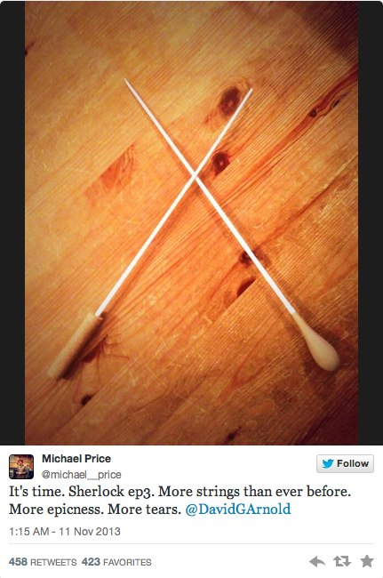

| |
این
پست ترجمه ی یکی از پست های وبلاگ دکتر جان واتسون است ، وبلاگی که توسط
سازندگان سریال همزمان با پخش آن به روز می شود و با وقایع سریال Sherlock منطبق است .
شرلوک چند تا
پرونده ی جنون آمیز طی چند سال اخیر داشته و من هیچ وقت نمی گم بهشون کاملا
عادت کردم ولی هیچی ، و واقعا هیچی ، نمی تونست من رو برای چیزی که در
خانه ی شماره 29 ، کوچه ی رایدر در بروکلی پیدا کردیم ، آماده کنه ...
ادامه مطلب
دوشنبه 16 دی 1392ساعت : 19:09|
نویسنده : Sherlockpedia |
|
این
پست ترجمه ی یکی از پست های وبلاگ دکتر جان واتسون است ، وبلاگی که توسط
سازندگان سریال همزمان با پخش آن به روز می شود و با وقایع سریال Sherlock منطبق است .
همه چی وقتی شروع
شد که من ایمیلی دریافت کردم . هیچ متنی نداشت فقط عکس یک مروارید بود . من
فکر کردم یک اسپم ( هرزنامه ) است ولی روز بعدش یکی دیگش اومد . یک ایمیل
دیگر ، یک عکس دیگر . یک مروارید دیگر . و باز هم و باز هم ... شش روز ، شش
مروارید . 1
بعدش
متوقف شد ، بدون هیچ توضیحی . من خوشحال می شدم نادیده اش بگیرم ولی شرلوک
شیفته اش شده بود . فکر کنم چیزی که بیشتر از همه جذبش کرد این بود که
ایمیل ها به من فرستاده می شد تا اون . خب ، فکر کنم اذیتش می کرد . خب ،
می دونم اینطور بود . یک روز صبح زنگ زد ، با داد و هوار و خواهان این بود
که بدونه چرا افراد جالب همیشه به من ایمیل می زدند نه اون . بعضی وقتا
واقعا شبیه به یک بچه ی کوچیکه ...
ادامه مطلب
دوشنبه 16 دی 1392ساعت : 13:37|
نویسنده : Sherlockpedia |
|
این
پست ترجمه ی یکی از پست های وبلاگ دکتر جان واتسون است ، وبلاگی که توسط
سازندگان سریال همزمان با پخش آن به روز می شود و با وقایع سریال Sherlock منطبق است .
خب ، چند روز پیش
گرِگ یه سری زد . یه جعبه ی حاوی چند تا وسیله که مال شرلوک بودن ، با خودش
داشت . واقعا یه سری خرت و پرت . هیچ چیزی نبود که حداقل نمود نزدیکی از
کسی که بوده یا کاری که می کرده باشه . وسایل نمی تونن این کارو بکنن . به
هر حال چیز های مادی قادر به انجامش نیستن . هممون تعلقات ، عکس ها ، اسباب
و اثاثیه و کتاب ها و ... داریم ولی اونا ، ما نیستن . اونا فقط اندوخته
هایی هستن که طی چند سال جمع آوریشون کردیم . اونا بی معنی اند .
ولی بعدش این دی وی دی توش بود . ویدیویی از شرلوک که داشت پیامی برای شام تولدم ضبط می کرد ...
ادامه مطلب
چهارشنبه 11 دی 1392ساعت : 23:44|
نویسنده : Sherlockpedia |
|
بی شک در دو فصل
پیشین یکی از نقاط قوت سریال Sherlock ، موسیقی متن فوق العاده ی آن ساخته
شده توسط David Arnold و Micheal Price بوده است که پیش از این به بررسی آن
در پست " شرلوک هلمز به روایت موسیقی
" پرداختیم . چند هفته پیش ، آهنگساز های این موسیقی متن از موسیقی متن آن
حرفی به میان آوردند و گفتند : " زه های بیشتر ...حماسه ی بیشتر ... اشک
های بیشتر " . حال هم تنها پنج روز پیش از پخش فصل سوم Sherlock ، پیش
نمایشی از موسیقی متن سریال ارائه کرده اند .
بیست
و دو ترک تازه ، در این پیش درآمد وجود دارند که می توانید این مجموعه را
از لینک فعلی زیر دانلود کنید . اما نکته ای را هم اشاره کنم . دوستانی که
نمی خواهند بیشتر از این سریال برایشان اسپویل شود (داستانش لو نرود ) به
ترک ها گوش نکنند . من هم تنها به دو یا سه مورد از آن ها گوش کرده ام و
گوش جان سپردن به بقیه را برای پس از پخش His Last Vow (سومین اپیزود فصل
سوم ) نگه داشتم . فرمت فایل rar است و حجمش هم 28 مگابایت .... لذت ببرید !
دانلود از Uploader.net :
دریافت فایل
دانلود از مدیافایر (برای دانلود روی تصویر کلیک کنید .)
جمعه 6 دی 1392ساعت : 15:09|
نویسنده : Sherlockpedia |
|
با نزدیک شدن به
روز کریسمس ، اطلاعات تازه ای از Many Happy Returns منتشر شده است . این
مینی اپیزود هفت دقیقه ای عنوانش " چندین بازگشت فرخنده " هست . خلاصه ی
اپیزود و اطلاعات پخش در ادامه ی مطلب ...
ادامه مطلب
یکشنبه 1 دی 1392ساعت : 16:03|
نویسنده : Sherlockpedia |
|
خب ، در ابتدا می خواستم شب یلدا رو پیشاپیش تبریک بگم ( البته فقط یه چند ساعتی مونده ولی به هر حال ...) و بعدش ، همونطور که از عنوان فهمیدید با یک تیزر تازه از قسمت اول فصل سوم Sherlock (نعش کش خالی) روبرو هستیم . زحمت این خبر و لینک دانلودش رو یکی از بازدیدکننده های عزیز ، خانم " آرزو" کشیدن و همین جا به نوبه ی خودم ازشون تشکر می کنم !
 لحظه ی صحبت لستراد با اندرسون در اولین لحظات ویدیو لحظه ی صحبت لستراد با اندرسون در اولین لحظات ویدیو
دوم اینکه حاوی اسپویلر هست ... این نکته اش مهمه ... گرچه چندان اسپویلر های حیاتی هم نیستند ... مثلا به نحوه ی زنده مونده شرلوک از سقوط یا ماجرای تروریستی این قسمت اصلا اشاره نمیشه ولی این که شرلوک داخل رستوران میره و چی کار می کنه ، چند لحظه گفت و گوی تازه ی بین مایکرافت و شرلوک و همچنین اولین لحظه ای که جان می فهمه شرلوک زنده است داخلش هستند . تصمیم با خودتون هست ! ولی شخصا توصیه می کنم ببینیدش !
برای دانلود از مدیافایر روی تصویر زیر کلیک کنید :
شنبه 30 آذر 1392ساعت : 15:49|
نویسنده : Sherlockpedia |
|
خب ، ظاهرا خبر
های هیجان انگیز شرلوکی تمامی نداره و خبر تازه حاکی از این هست که امسال در
روز کریسمس ( 25 دسامبر 2013 مصادف با چهارم دی ماه ) مینی اپیزودی از
Sherlock پخش می شود . این برای اولین بار است که با پخش مینی اپیزود یا
اپیزودی از شرلوک خارج از محدوده ی سه قسمت در یک فصل روبرو هستیم و این را
می توان تشکر کوچکی از طرفداران برای صبری که در فاصله ی پخش فصل دوم و
سوم کردند ، به حساب آورد .
این
مینی اپیزود ، از 25 دسامبر تا روز سال نو (اول ژانویه 2014) به صورت
آنلاین در مدت های متعدد در اینترت قرار داده می شود و نامش هم " Many
Happy Returns " است و توسط سرویس دکمه ی قرمز (BBC 's Red Button) در دسترس خواهد بود .
حضور بندیکت کامبربچ (بازیگر نقش شرلوک ) و
مارتین فریمن ( بازیگر نقش دکتر واتسون ) هنوز تایید نشده . در توضیح این
اپیزود هم آمده که :
" شرلوک هلمز دو سال است که رفته ... ولی یک نفر کاملا متقاعد نشده که او مرده است ... "
قول دادند که اطلاعات بیشتری را به زودی اعلام کنند .... پس تا " به زودی !"
سه شنبه 12 آذر 1392ساعت : 23:13|
نویسنده : Sherlockpedia |
|

موسیقی
متن Sherlock موسیقی متنی به یاد ماندنی و برتر به شمار می رود ...
آهنگساز های این سریال ، David Arnold و Michael Price هستند که به روال دو
فصل قبلی ، ساخت موسیقی متن این فصل را هم بر عهده دارند . اخیرا در
توییتی این جمع آهنگساز ، تصویر و متنی را برای طرفداران ارائه داده اند که
متن آن به این شرح است :
" وقتشه . شرلوک اپیزود سوم . زه های بیشتری از قبل ... حماسه ی بیشتر ... اشک های بیشتر "
از
طرف دیگر (EW (Entertainment Weekly تصویری تازه از بندیکت کامبربچ در نقش
شرلوک هلمز ارائه داده است و به همراه آن وعده ی تصاویر کامل تر .
جمعه 24 آبان 1392ساعت : 19:53|
نویسنده : Sherlockpedia |
|
پس از مدت ها انتظار بالاخره تاریخ پخش شرلوک فصل سوم در بریتانیا معلوم شد ! ساعت یک بعداز ظهر به وقت گرینویچ در شنبه ، پانزدهم دسامبر امسال ( بیست و چهارم آذر ماه 1392) ، اولین قسمت فصل سوم Sherlock در تئاتر ملی فیلم لندن به نمایش گذاشته خواهد شد . این در حالی است که هنوز تاریخ پخش این سریال به طوریکه در تلویزیون پخش شود و پس از مدتی در اینترنت قابل دانلود باشد هنوز مشخص نیست . فروش بلیت ها آغاز شده است و اولین عکس رسمی " نعش کش خالی " (The Empty Hearse) منتشر شده و خلاصه ای از اولین اپیزود هم شرح داده شده است :" دو سال پس از اتفاقات ویرانگر " آبشار رایخن باخ " ، به نظر می رسد جان به زندگی جدیدش عادت کرده است . علاقه ها و تجارب تازه و یک داستان عشقی . اما با وجود لندنی که در خطر حملات تروریستی ویرانگری است ، شرلوک قصد دارد خود را به جان نشان دهد ، با زنده ظاهرشدنش همراه با همه ی اتفاقات تماشایی که برای او طبیعی است . اگر شرلوک فکر می کند همه چیز همانطور خواهد شد که قبل از رفتنش بوده است ، قرار است بسیار شگفت زده شود ... " این اکران ، شبیه به اکران " رسوایی در بلگریویا " در تئاتر ملی لندن در 7 دسامبر 2011 ، تقریبا یک ماه قبل از نمایش آن در تلویزیون در اول ژانویه 2012 است . بلیت های آن موقع تنها چند ساعت بعد از امکان فروش آن ، فروخته شدند ... باید دید که این بار چطور خواهد بود ...
منبع : سایت Sherlockology
سه شنبه 14 آبان 1392ساعت : 20:09|
نویسنده : Sherlockpedia |
|
یک دقیقه صبر کنید ! این تیزر رسمی طولانی تر ارائه شده از طرف سازندگان سریال Sherlock نمی باشد و همچنان باید منتظر رسیدن زمان پخش چنین تریلری باشیم و این تریلری هم که این جا قرار می دهیم ، توسط یک وبسایت (یا می توان گفت گروه ) به اسم NYAH 86 ساخته شده است ...
ولی دلسرد نشوید ! اگر به دنبال تلفیقی از تیزر رسمی کوتاه فصل سوم ، صدای بندیکت کامبربچ در استار ترک 2 و صحنه هایی از دو فصل قبلی Sherlock هستید ، جای درستی آمده اید و تنها کافی است بر روی لینک زیر برای دانلود کلیک کنید ...
شنبه 11 آبان 1392ساعت : 23:42|
نویسنده : Sherlockpedia |
|
|
|
|